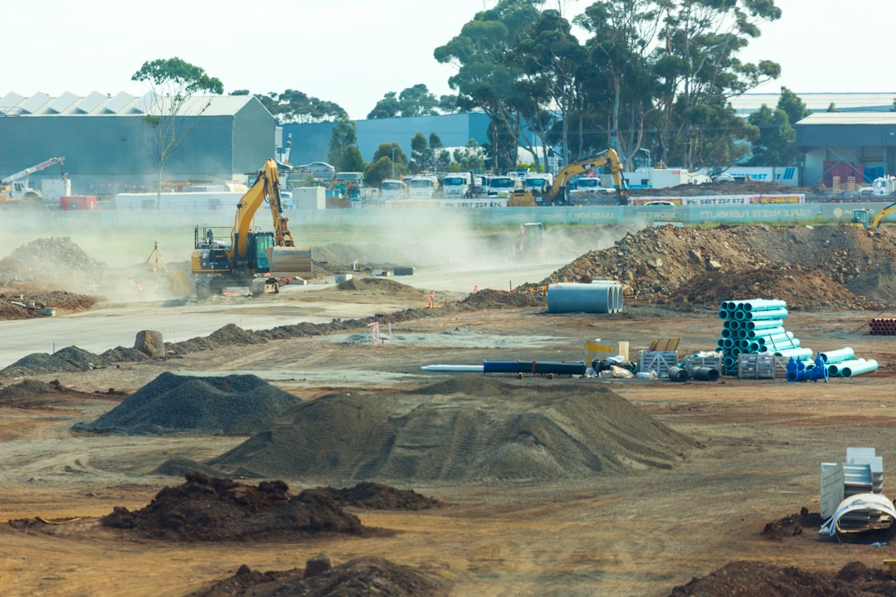

Adelaide earthmoving projects are usually clearer when the brief names the outcome, dimensions, access, ground condition, buried-service checks and spoil plan before contractors quote. The source page identifies 6 practical work types, including site cuts, trenching, land clearing, soil removal, driveway or shed pad preparation, and pool or tight-access excavation. For small backyard jobs, machine time is often 1-2 days when access is straightforward and the soil is not rock.
For homeowners and site managers comparing earthmoving contractors adelaide options, the useful starting point is a written scope that separates the ground result from machinery assumptions.
Earthmoving Contractors Adelaide Explained
Earthmoving Adelaide frames the first decision around the result required on site, rather than the machine name. That is a useful discipline for Adelaide projects because site cuts, foundation excavation, trenching, drainage shaping, driveway preparation and pool excavation all need different assumptions about levels, access, spoil and downstream trades.
A practical brief should say what the finished ground needs to support. A house pad, shed pad, hardstand area, stormwater trench, cleared landscape zone or pool excavation can each look like simple digging from the outside, but the contractor still needs dimensions, intended levels, known services, site photos and any plan drawings before the likely work method is clear.
- Outcome: describe the finished surface, trench, pad, driveway base or cleared area.
- Dimensions: provide approximate length, width, depth and level changes where known.
- Access: measure the entry path, turns, overhead clearance, surface condition and loading route.
- Material: note whether spoil, rubble, vegetation or unsuitable surface material may need separation and cartage.
Access And Ground Conditions Change The Quote
Gate width is only one access question. Established properties, tight courtyards, older laneways and shaped blocks can require compact plant, extra manoeuvring, smaller loads and more trips for spoil. The published guidance also points to overhead clearance, turns, working surfaces and the route to any loading area, which are often the details missing from a first enquiry.
Ground conditions also affect the review. Sand, reactive clay, fill and rock can change stability, machine choice, time on site and disposal assumptions. A sloping block in the foothills may involve more cut and fill than a flatter site, and retaining or stormwater questions can sit outside the excavation itself. The quote should make those boundaries visible instead of folding everything into a single vague line.
For broader context on related pages and service framing, the companion guide to earthmoving services in Adelaide is best read as a scope checklist, not as a substitute for a written site-specific quote.
Approval And Service Checks Before Digging
The source page is careful about approvals: a small-looking excavation is not automatically exempt. In South Australia, the relevant council or PlanSA should be checked where earthworks could affect neighbouring land, retaining walls, stormwater, protected features or form part of building work. That does not mean every job has the same approval path, only that the question belongs before work begins.
Buried services need the same early treatment. Current asset information and site-specific locating should be used before excavation starts. A contractor can price more realistically when the known services are identified, the work area is marked up, and responsibility for any locating, approvals, engineering or testing is stated in writing.
- Ask whether the excavation forms part of building work or a separate landscaping task.
- Check whether stormwater, retaining or neighbouring land could be affected.
- Confirm who arranges service information and on-site locating.
- Keep engineering, approvals, contractor selection and final written quote as separate decisions.
Who This Applies To
This guide is most relevant to Adelaide property owners, builders and project managers preparing a first enquiry for excavation and earthworks. It fits residential jobs such as shed pads, small deck excavations, garden terracing, driveway bases, pool digs and house-site preparation, as well as clearer commercial or civil enquiries where bulk earthworks, site clearing or cartage need to be separated.
It is less useful if the only question is an hourly machine rate. The money page warns that smaller residential jobs may be priced as a complete scope rather than only by time. A better comparison asks what is included, what is excluded, what happens to spoil, whether base preparation or compaction is part of the work, and whether testing, approvals or downstream trades are outside the excavation quote.
Quote Inputs Worth Preparing
A short enquiry can still be precise. The page asks for suburb, intended result, approximate dimensions, access measurements, known ground conditions, plans and photos. That set of inputs helps a contractor decide whether the job sounds like a site cut, trenching and drainage task, land clearing, soil removal, driveway or shed pad preparation, or pool and tight-access excavation.
Photos should show the entrance, the route through the property, the work zone, overhead obstructions, existing surfaces, stockpile areas and any obvious slope. Plans should be included where levels, foundations, stormwater or retaining are involved. If the work depends on another trade, say whether that trade has already supplied drawings or set levels.
When comparing earthmoving contractors Adelaide homeowners should read exclusions closely. Cartage, disposal, imported material, compaction, testing, permits, engineering and reinstatement can each change the final responsibility split. A quote that names those items is easier to compare than one that only says excavation and removal.
- Define the finished result. Write down whether the site needs a pad, trench, cleared area, driveway base, pool excavation or soil removal.
- Measure access. Record entry width, turns, overhead clearance, working surface and the route between the work area and loading point.
- Describe the ground. Note visible sand, clay, fill, rock, slope, rubble, vegetation and any previous excavation or retaining.
- Separate responsibilities. Ask which party handles approvals, locating, engineering, testing, imported material, cartage and disposal.
- Compare written inclusions. Review quotes by scope, exclusions and site assumptions instead of relying only on a machine rate.
| Project situation | Useful quote focus | Questions to ask |
|---|---|---|
| Straightforward small backyard work | Machine access, expected work area, spoil removal and whether the job is priced as a complete scope | Is access suitable for the proposed plant, and is cartage included? |
| Sloping or level-sensitive site | Surveyed levels, cut and fill assumptions, drainage and retaining boundaries | Who confirms levels, and what is outside the excavation quote? |
| Tight-access pool or courtyard excavation | Compact plant, loading route, smaller trips and protection of established surfaces | What route will machinery and spoil take through the property? |
| Trenching or drainage excavation | Service checks, stormwater shaping, trench dimensions and reinstatement responsibilities | Who checks buried services and who restores the area afterward? |
Common questions
How much does earthmoving cost in Adelaide? The source page says cost varies with machine size, job complexity, access, ground conditions, operator time and disposal. Smaller residential work may be priced as a complete scope, so written inclusions are more useful than an assumed average.
Do I need approval before earthworks? Approval depends on the property, planning rules and proposed work. The published guidance says to check with the relevant council or PlanSA where earthworks could affect neighbouring land, retaining walls, stormwater, protected features or building work.
What should I send before asking for a quote? Send the suburb, intended result, approximate dimensions, access measurements, known ground conditions, plans and photos. Those details help separate excavation, cartage, materials, testing, approvals and downstream trade responsibilities.
Can a small backyard excavation be quick? For examples such as a small deck, shed pad or garden terracing, the source page says actual machine time is often only a day or two when access is straightforward and the soil is not rock.
This guide covers Adelaide earthworks planning, quote inputs, access checks, spoil assumptions and approval questions for residential and commercial site enquiries.